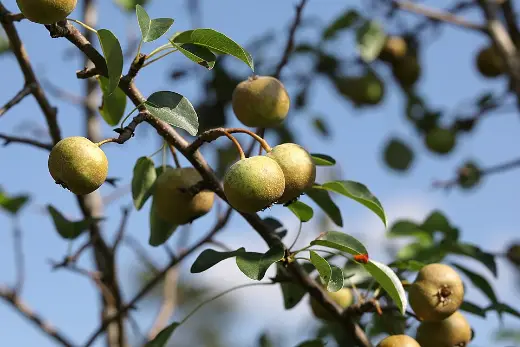

Wild fruit · Sep–Oct
Wild pear
Pyrus pyraster
Also called Wilde peer
Wild pear is a wild fruit you can forage from September to October in South and East. Thorny woodland pear with small, hard, round fruit.

When is wild pear in season in the Netherlands?
Wild pear is usually in season September to October. Timing shifts with weather, latitude and altitude.
Where does wild pear grow in the Netherlands?
Wild pear grows in Drenthe, Flevoland, Friesland, Gelderland, Groningen, Limburg, North Brabant, Overijssel, Zeeland. Regions: South, East.
How do you recognise wild pear?
Thorny woodland pear with small, hard, round fruit.
How do you harvest wild pear?
Pick only fully ripe fruit that comes away easily, into a shallow container so it doesn't crush. Leave plenty on the plant for birds and wildlife.
How do you eat wild pear?
Bletted or cooked into butter, perry and dried pear.
How do you store wild pear?
Dry slices.
What is wild pear good for?
Vitamin C.